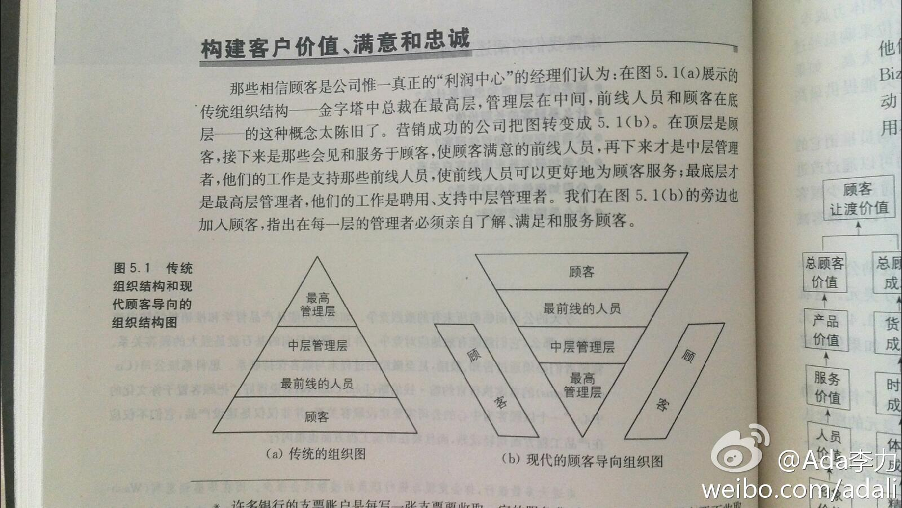
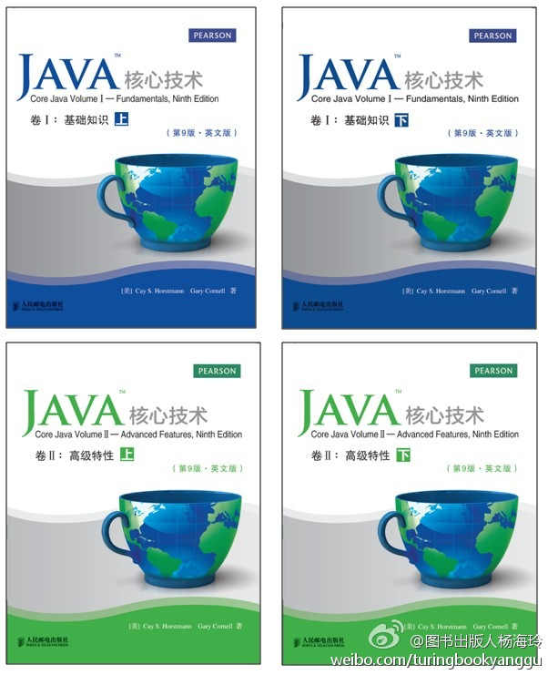

#读书#人类学家贝尔博士在做Intel公司的全球调研时发现，谦卑和纯朴的价值观可能和互联网技术不相容，在一些印度或穆斯林家庭中，互联网技术是不受欢迎的。— 中国60后，70后接受互联网程度不如80后，90后，可能是价值观原因。对我在微博上各种秀，担忧劝诫的基本都是70前人。
#读书#有些经理把营销调研工作看成是简单的抄抄写写，因此他们雇佣能力差的人，这些人缺乏训练和创造力，因而在工作中难取得出色成果。管理层对营销期望又过高，令人失望的结果增加了管理层的偏见，因而继续支付低工资，问题就一直持续。— 不少工种都有这现象。
@程开源 说他曾经的老板也这么训练过销售//@八爪李炯明:你应该去夜店锻炼一下，#搭讪# 是将诉求控制在3秒钟及2句话以内的一种简洁、高效的沟通与表达方式，你需要这个技能！Twiiter的老板就是在夜店获得启示，因此控制在140字以内！@研究者July:最近一期的《快乐大本营》中，有一段是Michael Jackson的编舞老师Tone教柳岩和陈妍希跳Michael Jackson的舞蹈，当画面呈现时，深感她两能跳偶像的舞蹈是多么的幸运。娱乐归娱乐，但最优秀的人如Tone，即便是娱乐也是最用心的，认真对待，不辜负偶像和他人的期待。既然选择努力，那就请成为最优秀的人。
#读书# 现代的顾客导向组织图，是倒金字塔型。倒金字塔这个名词最早是从海尔的张瑞敏得知，华为的说法是让听见炮火的前线员工做指挥，管理层的作用是支持前线人员。— 看书还是要找到鼻祖版，比如这本科特勒的《市场营销》 
#读书# 对顾客满意度的调查，可能只有一个问题真正重要：你会不会把这个产品或者服务介绍给一个朋友？而顾客是否愿意把产品推荐给朋友取决于一线员工对这个客户的服务如何。— 我马上想到的是海底捞的例子，海底捞开新店的标准是，是否有足够的合格服务员。
#读书#著名的20：80法则大家都知道。Sherden修改为20—80—30法则，即20%的顾客创造了80%的利润，然而其中一半损失在了底部的30%的非盈利顾客上。就是说，一个公司应该剔除最差顾客以改进利润。— 道理容易懂，判断哪些是需要剔除的人，比较难。
最近几次线下活动中，接触到不少资深技术人员，告诉我：他2000年初就是CSDN的用户；他买过第一期《程序员杂志》；他曾经担任过版主；他一直写着博客…… 我很惭愧的是，如果不是他们当面告诉我，我对他们在CSDN上的活动一无所知。我还忘了问很重要的问题：他们希望获得什么样的产品和服务？
回复@梁颖_行云流水:可以对老用户做个抽样调查。 //@梁颖_行云流水:或者换一种问法：是什么让他坚持10多年都在使用CSDN。其实他使用的CSDN任何一个资源，都是我们提供的服务之一。除了几大基础服务（下载，论坛，博客），他是否还是ＣＳＤＮ某个俱乐部的会员，是否对新推出的ｌｉｎｋ、ｃｏｄｅ产品有@Ada李力:最近几次线下活动中，接触到不少资深技术人员，告诉我：他2000年初就是CSDN的用户；他买过第一期《程序员杂志》；他曾经担任过版主；他一直写着博客…… 我很惭愧的是，如果不是他们当面告诉我，我对他们在CSDN上的活动一无所知。我还忘了问很重要的问题：他们希望获得什么样的产品和服务？
回复@卓伟-:收集资深用户反馈中…… //@卓伟-:应该是02年注册，论坛、下载为主，另外现在还当做技术门户来了解资讯和一些线下活动。有时觉得下载真可以发些力做成C++Project网站样的或者做成开源社区样的 //@Ada李力:回复@梁颖_行云流水:可以对老用户做个抽样调查。@Ada李力:最近几次线下活动中，接触到不少资深技术人员，告诉我：他2000年初就是CSDN的用户；他买过第一期《程序员杂志》；他曾经担任过版主；他一直写着博客…… 我很惭愧的是，如果不是他们当面告诉我，我对他们在CSDN上的活动一无所知。我还忘了问很重要的问题：他们希望获得什么样的产品和服务？
@程序媛 @家常咖啡 你们估计有希望获赠书//@2gua://@图书出版人杨海玲: 本人自开微博以来，首次公开发起赠书活动，一周内转发本微，即有机会获赠好书。本次活动中奖规则：转发本微博之后形成转发量最大的前4位读者会获赠《Core Java》英文影印版《Java核心技术 卷1》#海玲赠书#@出版人杨海玲:#人邮新书速递# Java平台的权威指南Core Java最新版第9版影印版《Java核心技术》2卷本明天付印，即将上市！先晒个封面吧～～～Java经典好书，第8版曾获得第13届Jolt生产效率大奖，可谓是Java图书的“泰山北斗”。新版进行了全面更新，以反映Java SE 7的语言变化。 